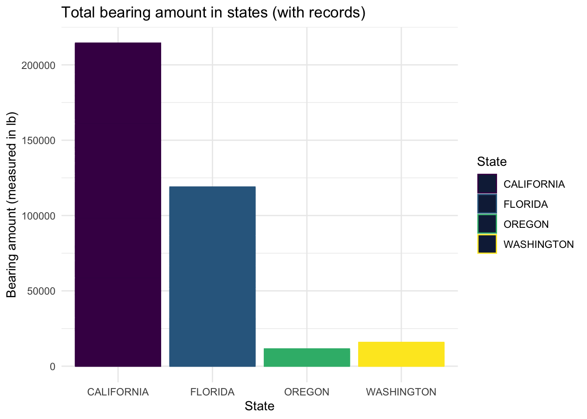
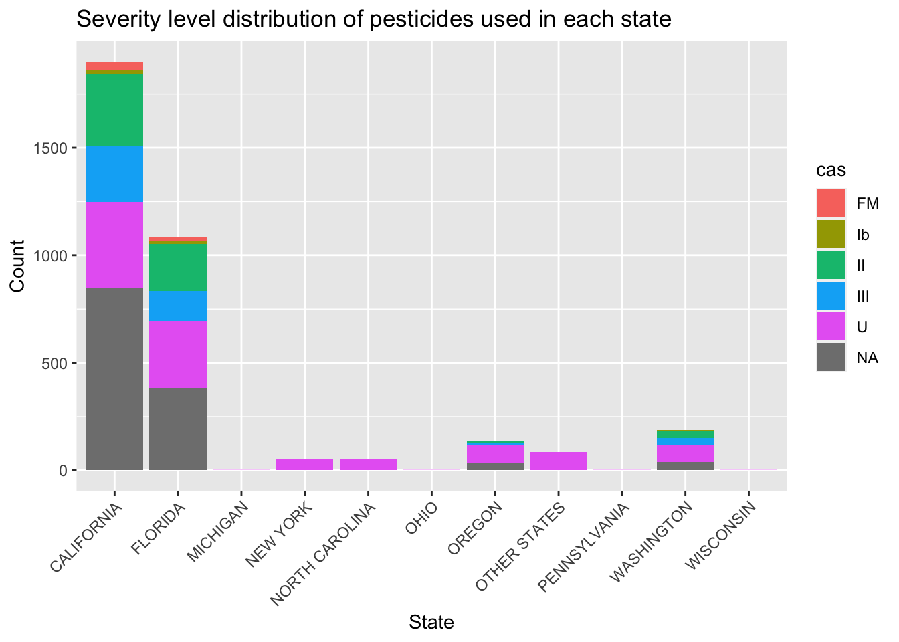
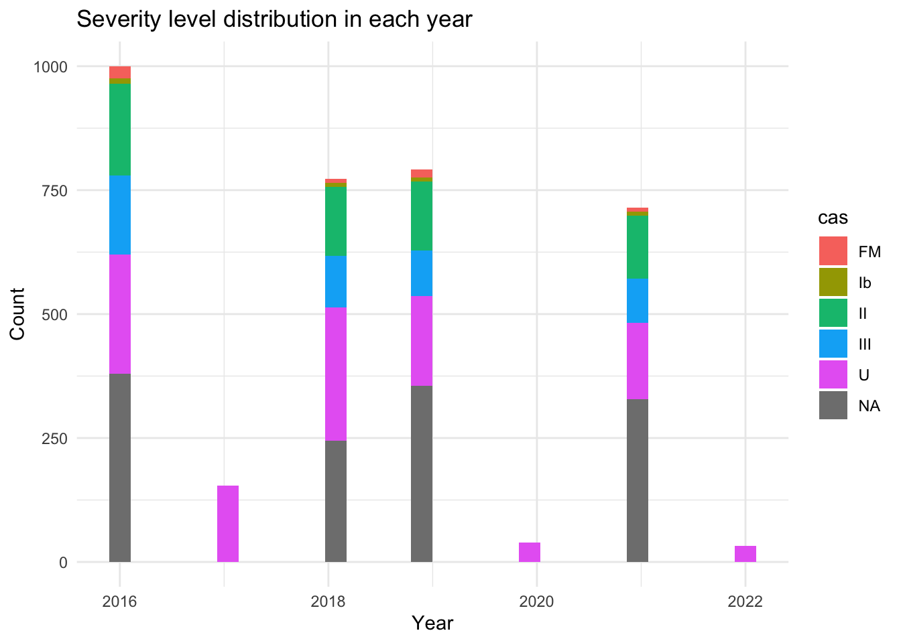

#read data
strawberry <- read.csv("strawberry.csv")
## define function
#drop NA
strawberry <- strawberry %>%
select_if(~ !all(is.na(.)))MA 615 Strawberry EDA
Data acquisition and assessment
Data Source The data have been stored on NASS here:
Original Conditions:
Organization:
The dataset is consists of basic information of strawberry growing information include year, period, price, state and organic conditions etc.
Problems:
There are lots of NAs and single value columns. Also there exists missing values in Value and CV filled with (D), (H) or just blank cells. Records in Data.item column is messy.
Initial questions
Assumptions and motivations:
This research is to find recent year’s chemical used and it’s severity level distribution in each state.
Data cleaning and organization
Step 1: Remove columns with only NAs.
Step 2: Remove columns with only single value. And we separate dataset by survey and census. The rest of analysis are focus on survey data.
#drop single value columns
single_value <- function(vec){
tab <- table(vec)
if (length(tab) == 1) {
return(TRUE)
}
else{
return(FALSE)
}
}
drop_single_value_col <- function(df) {
cols_to_drop <- c()
for (i in 1:(ncol(df) - 1)) {
if (single_value(df[, i])) {
cols_to_drop <- c(cols_to_drop, i)
}
}
df <- df[, -cols_to_drop]
return(df)
}
strawberry1 <- drop_single_value_col(strawberry)
strawberry1$Value <- as.numeric(strawberry1$Value)
strawberry_census <- subset(strawberry1, Program == "CENSUS")
strawberry_survey <- subset(strawberry1, Program == "SURVEY")Step 3: Deal with the (D) value in the Value column. We replace (D) value by the mean of “Value” of each data item group.
##First we drop all (D)s ,(Z)s and (NA)s in the dataset.
strawberry2 <- strawberry1[complete.cases(strawberry1), ]
strawberry1$Value <- as.numeric(strawberry1$Value)
strawberry2 <- strawberry1[complete.cases(strawberry1), ]
uniq_data_item <- unique(strawberry2$Data.Item)
#mean_value by data item
mean_value <- strawberry2 |>
group_by(Data.Item) |>
summarize(MeanValue = mean(Value))
mean_value <- as.data.frame(mean_value)
#replace value by mean
strawberry_census_1 <- strawberry_census %>%
group_by(Data.Item) %>%
mutate(Value = ifelse(is.na(Value), mean(Value, na.rm = TRUE), Value))
strawberry_survey_1 <- strawberry_survey %>%
group_by(Data.Item) %>%
mutate(Value = ifelse(is.na(Value), mean(Value, na.rm = TRUE), Value))Step 4: We find the severity of chemical used by converting PC code in the data set to CAS code. And then find the corresponding pesticide and its toxicity.
strawberry_survey_1 <- strawberry_survey_1 %>%
mutate(
Chemical = if_else(str_detect(Domain.Category, "\\(.*=.*\\)"),
str_extract(Domain.Category, "(?<=\\().*?(?=\\=)"),
NA_character_),
Chemical_Code = if_else(str_detect(Domain.Category, "\\(.*=.*\\)"),
str_extract(Domain.Category, "(?<=\\=).*?(?=\\))"),
NA_character_)
)
strawberry_survey_1$Chemical_Code_num <- as.numeric(strawberry_survey_1$Chemical_Code)
strawberry_survey_1$Chemical_Code_str <- ifelse(is.na(strawberry_survey_1$Chemical_Code_num),
NA,
sprintf("%06d", strawberry_survey_1$Chemical_Code_num))
# library(httr)
# library(jsonlite)
# get_cas <- function(PC){
# path <- paste0("https://ordspub.epa.gov/ords/pesticides/apprilapi/?q=%7b%22ais%22:%7b%22$instr%22:%22", PC,"%22%7d%7d")
# r <- GET(url = path)
# r_text <- content(r, as = "text", encoding = "UTF-8")
# df <- fromJSON(r_text, flatten = TRUE)
# df_strwb <- df$items[grepl("Strawberries", df$items$sites, fixed=T),]
# ais <- df_strwb$ais[1]
# pattern <- "\\(([^A-Za-z]+)\\/([0-9-]+)\\)"
# text <- ais
# matches <- regmatches(text, gregexpr(pattern, text))
# cas <- sapply(matches, function(x) gsub(".*\\/([0-9-]+)\\)", "\\1", x))
# if (is.character(cas)) {
# return(cas[1])
# }
# else {
# return("can't find")
# }
# }
# unique_stb=unique(strawberry_survey_1$Chemical_Code_str)
# result=numeric()
# k=numeric()
# for(i in 1:length(unique_stb)){
# result[i]=get_cas(unique_stb[i])
# k[i]=unique_stb[i]
# print(result[i])
# }
#
# code_dict <- data.frame("pc_code" = k,
# "cas_code" = result)
#write_csv(code_dict,"code_dict.csv")
code_dict <- read.csv("code_dict.csv")
code_dict$Chemical_Code_num <- as.numeric(code_dict$pc_code)
code_dict$Chemical_Code_str <- ifelse(is.na(code_dict$Chemical_Code_num),
NA,
sprintf("%06d", code_dict$Chemical_Code_num))
cas <- read.csv("CAS.csv",header=T)
code_dict$pc_code <- as.numeric(code_dict$pc_code)
code_dict$pc_code <- ifelse(is.na(code_dict$pc_code),NA,sprintf("%06d", code_dict$pc_code))
merged_df_all <- read.csv("merage(1).csv")
merged_df_all$Chemical_Code_num <- as.numeric(merged_df_all$k)
merged_df_all$Chemical_Code_str <- ifelse(is.na(merged_df_all$Chemical_Code_num),
NA,
sprintf("%06d", merged_df_all$Chemical_Code_num))
# merged_df_strw <- merge(merged_df_all, strawberry_survey_1,by = "Chemical_Code_str")
# write_csv(merged_df_strw,"merged_df_strw.csv")
merged_df_strw <- read.csv("merged_df_strw.csv")EDA
Strawberry bearing amount in states

In recent years, California had the largest strawberry bearing amount.
Severity level distribution of pesticides used in each state

The chemical using in California is much higher than other states may due to the high production of strawberry in this state. Some severity level value missed in Michigan, Ohio Pennsylvania, Wisconsin. The data in New York, North Carolina and Other States are also partially missing. According to the records, the most severity level are NA and U in each state.
Severity level distribution of chemicals in each year

Some severity level value missed in 2017, 2020 and 2022. From the available data, most severity level of chemicals are NA and U.
The most popular kind of chemical by year
# library(esquisse)
# esquisser(merged_df_strw)
result <- merged_df_strw %>%
group_by(Chemical, Year) %>%
summarise(count = n()) %>%
arrange(desc(count))`summarise()` has grouped output by 'Chemical'. You can override using the
`.groups` argument.most_popular_by_year <- result %>%
group_by(Year) %>%
slice_max(order_by = Chemical) %>%
ungroup()
print(most_popular_by_year)# A tibble: 7 × 3
Chemical Year count
<chr> <int> <int>
1 "ZETA-CYPERMETHRIN " 2016 4
2 <NA> 2017 154
3 "TRIFLUMIZOLE " 2018 4
4 "ZETA-CYPERMETHRIN " 2019 4
5 <NA> 2020 39
6 "TRIFLUMIZOLE " 2021 8
7 <NA> 2022 33Chemical data are missing in many years. We can only find popular chemical in 2016, 2018, 2019, 2021.
The most popular kind of chemical by state
result1 <- merged_df_strw %>%
group_by(Chemical, State) %>%
summarise(count = n()) %>%
arrange(desc(count))`summarise()` has grouped output by 'Chemical'. You can override using the
`.groups` argument.most_popular_by_year1 <- result1 %>%
group_by(State) %>%
slice_max(order_by = Chemical) %>%
ungroup()
print(most_popular_by_year1)# A tibble: 11 × 3
Chemical State count
<chr> <chr> <int>
1 "ZETA-CYPERMETHRIN " CALIFORNIA 4
2 "TRIFLUMIZOLE " FLORIDA 12
3 <NA> MICHIGAN 1
4 <NA> NEW YORK 52
5 <NA> NORTH CAROLINA 55
6 <NA> OHIO 1
7 "TERBACIL " OREGON 4
8 <NA> OTHER STATES 86
9 <NA> PENNSYLVANIA 1
10 "ZETA-CYPERMETHRIN " WASHINGTON 4
11 <NA> WISCONSIN 1Chemical data are missing in many states, we can only find most popular chemical in California, Florida, Oregon and Washington.
Further Works
This research only focus on the survey data. There are lots of records missing. And only 11 states available in this dataset. To analysis the chemical use and sales condition in the whole country, we should analysis the census data which contains all states in the US.
References
Material about strawberries
WHO says strawberries may not be so safe for you–2017March16
Pesticides + poison gases = cheap, year-round strawberries 2019March20
Multistate Outbreak of Hepatitis A Virus Infections Linked to Fresh Organic Strawberries-2022March5
Technical references
In their handbook “An introduction to data cleaning with R” by Edwin de Jonge and Mark van der Loo, de Jonge and van der Loo go into detail about specific data cleaning isssues and how to handle them in R.
“Problems, Methods, and Challenges in Comprehensive Data Cleansing” by Heiko Müller and Johann-Christoph Freytag is a good companion to the de Jonge and van der Loo handbook, offering additional insights.